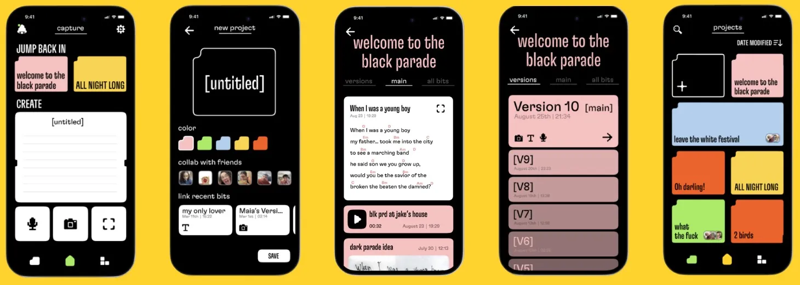
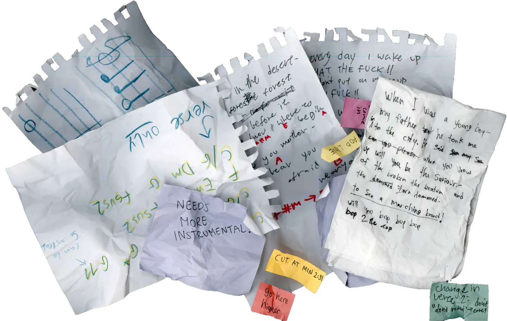
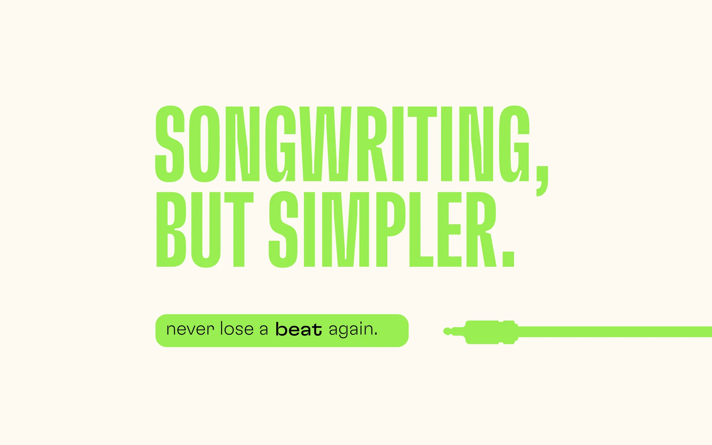
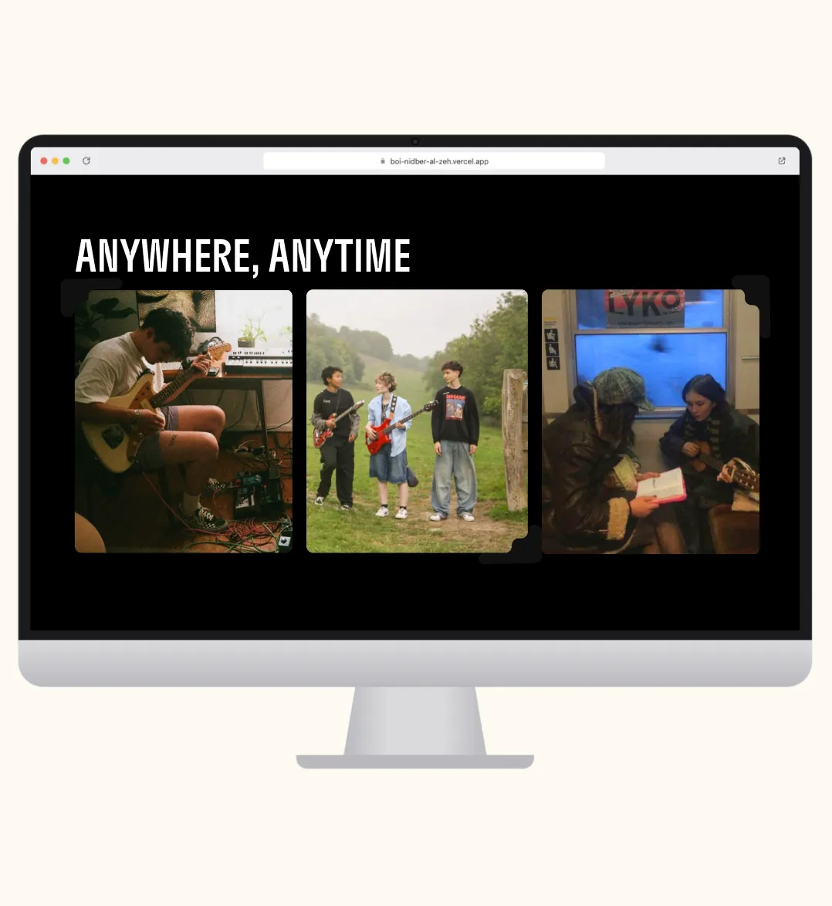
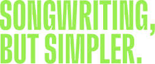

ux\ui
student project
2025
trac. is an app that keeps your songwriting organized while you keep creating. Write lyrics, capture ideas, record drafts, and build your projects without the usual mess in between.
In our startup course, we were asked to design an app that stores information. After our research, we detected this problem independent musicians have - ideas don't wait for a good moment. A melody hits on the bus, a line comes mid-conversation. Musicians do capture them: a voice memo here, a photo there. Then they forget it exists, or where they saved it.
too many versions
too many places
& too easy to lose
Our Solution:
Write lyrics, capture ideas, record drafts and build your projects all in one place without the usual mess in between.

I designed this app end to end alongside Mia Gaon. We shared responsibility across the process, from research and small-scale studies to ideation, prototyping, and defining the app’s visual language.
I took lead on key parts of the design process, in development of the visual language, designing the landing page, and building the final full-flow prototype.
